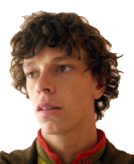

Curriculum Vitae

{kind=link}
- e-mail: kdoSeBojiNeboMiluje@vojtechmasa.com
- Telefon: +420 608 738 170
Studia
- 2011 Akademie výtvarných umìní, Záhøeb, Chorvatsko
- Ateliér malíøství. Vedoucí: prof. Igor Ronèeviæ
- 2010 Asagaya College of Fine Arts and Design, Tokio, Japonsko
- Image Creation Studio. Vedoucí: Yukio Fukuda
- 2009 – nyní Fakulta
výtvarných umìní VUT Brno
- Ateliér intermédia – vedoucí doc. Václav Stratil
-
2007 – 2008 Akademie výtvarných umìní, Lublaò, Slovinsko
- Ateliér malby prof. Gustava Gnamu¹e
- (jednoletý výmìnný program)
-
2005 – 2009 Pøírodovìdecká fakulta Masarykovy univerzity
- Obor: Matematická biologie
- Bakaláøská práce:
-
2002 – 2009 Fakulta informatiky Masarykovy univerzity
- Jedna specializace: Grafický design a výtvarná informatika
- Druhá specializace: Typografie
- Bakaláøská práce:
- Diplomová práce:
-
1993 – 2002 Biskupské gymnázium v Brnì
- Maturita: Èeský jazyk, Angliètina, Chemie, Biologie
Ocenìní a soutì¾e
- 2013 Vítìz – Cena EXIT 2013
- 2010 Finalista – Cena 333 Národní galerie v Praze a Skupiny ÈEZ
- 2009 Vítìz – Cena dìkana Fakulty informatiky Masarykovy univerzity
- 2009 Finalista – ESSL Award 2009 za Slovinsko
Rezidenèní pobyty
- 2011 Artist in Residence in the Grounds of Zenko-ji Temple, Nagano, Japonsko
Výbìr ze samostatných výstav
2013 Exemplární druh, Galerie mladých, TIC, Brno
2012 Je¾ek (zajíc), Galerie Dobrý den, Unièov
2012 Klaunovy názory, malby, Galerie Umakart, Brno
2011 Poetry Hunter, malby a kresby, Hanagura Gallery, Nagano, Japonsko
2009 A Little Bit of This A Little Bit of That, malby a kresby, centrum Lávka Lu¾ánky, Brno
2008 Trinajsta soba, fotografie, Café Pilon, Lublaò, Slovinsko
2008 Everything is alright, kresby, BI-KO-FE, Lublaò, Slovinsko
2007 Sarko Facho! fotografie, ®lutá galerie FSS MU, Brno
2007 Den bìhem roku, fotografie, klub Desert, Brno
2004 Kdepak by horalé v Rampu¹i hledali slona, fotografie, BiGy, Brno
Výbìr ze skupinových výstav
2013 Cena EXIT 2013, Galerie Emila Filly, Ústí nad Labem
2013 Hi5!, Dùm umìní mìsta Brna
2012 Zku¹ební vrty, Galerie G99, Dùm umìní mìsta Brna
2012 VI. Zlínský salon mladých, Dùm umìní ve Zlínì, Zlínský zámek
2012 Perly sviním, Galerie AVU, Praha
2011 Neue Kroatische Kunst, Medica, Záhøeb, Chorvatsko
2010 Finalisté – Cena Národní galerie v Praze a skupiny ÈEZ 333, Národní galerie v Praze, Veletr¾ní palác
2010 Juliette Mallet & Vojtìch Ma¹a, Asagaya College of Fine Arts and Design, Tokio, Japonsko
2010 Ontogenie – 10 dní s umìním, Zbrojovka, Brno
2010 &n
2010 10 let ateliéru grafického designu a multimédií Fakulty Informatiky Masarykovy Univerzity. Galerie U Dobrého pastýøe, Brno
2010 Ha»apa»a, výstava ateliéru Intermédia FAVU, instalace, Galerie 12, Zlín
2009 Výstava nominovaných na ESSL Award 2009, fotografie a malby, Lublaòský hrad, Lublaò, Slovinsko
2008 Preboj mladih (Souboj mladých), malby, Galerija Severia, Koper, Slovinsko
2008 XIX. plenér Akademie výtvarných umìní Ljubljana, obrazy, Mìstská galerie Velenje, Slovinsko a Lublaòský hrad, Lublaò, Slovinsko
2007 1.3 festival nových médií, interaktivní instalace, Mìstská galerie v Lublani, Slovinsko
2007 Trojky, fotografie, Bezejmenná galerie FI MU, Brno
2005 Výstava uèitelù a studentù AGDAMM, Fotografie, Mìstské divadlo Brno
tyto stránkx
Pokud máte nìjaké dotazy, chtìli byste ode mì koupit art, vytvoøit stránky, dát mi po rypáku nebo cokoli jiného, napi¹te mi na adresu, která je uvedená nahoøe.